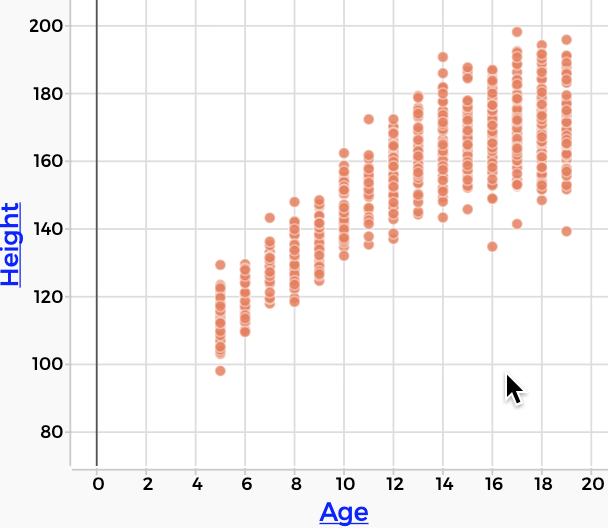

3 800 Children and Teens, part one
Next we look at a data set that has information on 800 US children and teens (aged 5–19) from 2003. You will find information about Pulse, Weight, and other things.
3.1 Exploration
Your first task is to explore the data. Here are some questions you can address:
- What attributes do you expect to be related?
- Can you show that relationship in a graph?
- What other relationships can you show?
- Try making more than one graph, and then select points in one of them. What happens? How might that be useful?
- What do you think the units are for these values? (especially
Weight,Height, andPulse) - What’s
BMI? If you don’t know, look it up.
3.2 A Specific Question: Who is Taller?
Who is taller, males or females?
Stereotypically, we probably agree that, in general, males are taller. But is that really true? Let’s use the data to find out.
The next illustration contains a CODAP document that graphs Height against Gender. That’s the obvious way to look at our question.
It looks as if the pile of males is a bit higher up in the graph, that is, they’re taller. But how much? Let’s find the mean.
Oh, and if you’re reading this book in a browser, that illustration is live. You don’t have to make a separate CODAP window for this bit.
- Click on the graph to select it.
- At the right of the graph, click on the “ruler” icon. A panel opens up. We call these things “palettes.”
- Click the checkbox for mean. (Of course you can try other options as well.)
- Hover over the mean lines that appear. You can see the values.
You should find that the average height of males is about 10 (cm) greater than the average height of females. So that shows that our preconception (males are taller) is correct.
But, but…
If you stop and think a bit, our graph is deeply bogus. It’s a bad analysis. Why?
Try not to read ahead…
- If you’re a student in a class, discuss with your group.
- If you’re studying alone, think about this before scrolling down to see what we think.
3.3 Making the Question More Specific
The problem is that we haven’t taken Age into account, and Age is much more important than Gender in determining height. The whole long tail of short people—for both males and females–is made up of little kids. If you’re not convinced, drop Age into the middle of the graph.
Go ahead, we’ll wait.
In general (the graph says), the short people are younger. Make sure you can explain how the graph shows that. What is it about the colors that says short people are younger?
Still, it’s a confusing graph. Let’s make it simpler.
Instead of looking at everybody we have, ages 5–19, let’s just look at one age: 10-year-olds. First we’ll filter the graph so it shows only 10-year-olds. Then we’ll compare the heights of those boys and those girls.
You get a fresh, live document below. Follow these steps for the filtering:
- Drag
Ageto the horizontal axis so you have a graph ofHeightagainstAge. - Take a moment to discuss (or reflect) on whether that graph makes sense. It tells a story. What is it?
- Select all the 10-year-olds. Do this by dragging a rectangle around those points. If this is unfamiliar to you, you can probably figure it out by messing around. If that doesn’t work for you, get help!
- With the graph selected, click on the “eyeball” palette on the right to bring up a menu.
- Choose Hide Unselected Cases. Aha! Now the graph has only 10-year-olds.
Now figure out how to compare the heights of the boys and the girls, this time of only the ten-year-olds. Be sure to put the mean on the graph so you get their average heights. See if you can get this graph:

Some questions to answer; if you don’t know, don’t be afraid to ask others!
- How did you compare the 10-year-old girls to the boys?
- Are there other ways to compare them in a graph? Sure there are!
- Which way works better?
- The heights of females overlap with heights of males. What does that mean?
- What are the mean heights of the 10-year-old girls and boys?1 How did you find them?
- For the whole dataset, males are taller. For 10-year-olds, females are taller. How is that possible? Does it fit with your experience?
3.4 Groupwork! Getting all the means
If you’re in a class, and there is enough time, your instructor will break you into groups.
Each group will be responsible for a couple of ages. For each age, do what we just did for 10-year-olds: find the mean height for the girls and the boys at that age. Then enter your data on a class table, which may be on a whiteboard, or perhaps online in a shared table such as a Google Sheet.
Then, when all the groups are done, enter your data into a fresh CODAP document. How do you do that?
- Begin with a fresh CODAP document.
- Make a new table (look in the Tables tool).
- Create the relevant columns (what columns do you need?).
- Enter the data by typing the numbers in to the table cells.
If you have the data in a Sheet, you could, instead:
- Begin with a fresh CODAP document.
- Export the sheet as a .csv file. (in Google, it’s in the File menu. Choose Download and then Comma-separated Values.)
- Drop the file into your CODAP document.
Then plot the means as a function of age. Make sure you can tell the males from the females!
Plotting two things at once
If the mean heights for males and females are in different columns in your table, you might first plot the females on the vertical axis and age on the horizontal. But then, if you plot the males in the normal way, the female data will disappear. How do you get them both on the same graph?
The trick is this: as you are dragging the males in, wait. With the mouse down, pause and look: there is a gray outline of a plus sign at the top of the axis. Drop the attribute there instead of on the axis; it will add the data to the plot instead of replacing it.
3.5 Commentary
There are three main phases to this lesson.
First, students mess around with the data, making graphs using any attributes they like, looking for relationships. Ideally, a few of them get to show and explain their graphs, and you run a discussion as decscribed in the commentary.
In the second phase, we focus on a specific issue: who is taller, females or males? We learn to show means on the graph. When the obvious analysis doesn’t work well, and we are still awash in data, we get even more specific and focus on 10-year-olds. We use a data move, filtering, to do this. Very important.
If possible, there’s a third phase where students—probably in groups— find the mean heights for boys and girls at each age, then plot those results.
The final graph tells a clear story about height and gender and age.
Who is taller? More detail…
In the first, exploratory phase, somebody probably made a graph with height and age or height and gender. Explain that we will now focus on this issue.
In a class—even online—rather than having students read the instructions and do this alone or in pairs, I do this next part as a demo, and go through the process outlined in the text. I focus on height versus gender, with questions along the way (e.g., Why is height on the vertical axis? Because it’s the response? Right. But also, because height is vertical.)
I make the graph and show how to put the means on the graph using the ruler palette. We see, by hovering, the different values. We ask, “Are we done? Males are taller than females?”
And if no one says so, we tell them that actually, there is something deeply bogus (or hinky or whatever the current term is) about our graph. It’s a fine graph, but it’s unfair. Why? What’s missing?
Wait time. Wait time.
Someone will say “age.” Probe for what they mean. Plop Age onto the graph to see the color gradient. Yeah, the tails are all little kids.
Earlier someone might have made the graph of Height against Age. You can refer back to it, and make that graph for the class. If they haven’t, you can do it, plopping Gender into the middle.
What do you think about this graph? Is it clear what’s going on? Partly, but it’s hard work to read this graph. It’s still confusing. Let’s find a way to have this make more sense.
So we do the filtering move: we select the 10-year-olds and hide the rest, then put Gender on the axis and show the mean heights of each group, reflecting on the realization that, although in general the males are taller, the story is different for particular ages.
That’s about as much lecture/demo as we can tolerate, so we switch to a different mode.
Groupwork! Getting the means in more detail…
What if we did that procedure—looking at only the ten-year-olds, and recording the mean heights of the males and females— but for every age?
It would be really cool. So we do exactly that. Every group gets an age or two to be in charge of. Their task is to find the mean heights of males and females at those ages. Groups post the means in a table on the class whiteboard or in a Google Sheet.


The fact that it was groups gave students a welcome break, a chance to talk, and also reinforced that key skill of filtering. When we were in quarantine, we did this in randomized Zoom breakouts. We had pre-assigned the ages to group numbers.
In addition, this part of the activity gave students practice with computing means; introduced how to enter your own data into CODAP; and most importantly showed them where you can go with this.
I think it’s important that the filtering and typing will be slow and a little laborious, for two reasons: first, of course, when you show them how the computer can do it in the next lesson, they will see how cool and time-saving it is. Second, slowing down highlights this idea of turning the means into values in a table that you can graph. It gives it time to sink in.
The key moment: filtering
Filtering is our first data move. When we display all the data, the Heightvs.Age graph does make sense, and it tells a story, but it’s complicated. Looking at it, we’re pretty “awash in data.”
For example, we were trying to compare heights across genders, right? But the height-age graph doesn’t have gender (left-hand illustration). What if we drop Gender onto the middle of the graph? You’ll get something like the right-hand illustration (and you should do it yourself).


Gender. This is confusing. We’re awash.You can kind of see that males are taller, at least older males are taller, but it’s not really clear because so many of the points are stacked on top of each other. You can’t tell whether purples are hiding under oranges or what.
But when we filter, and look at only the 10-year-olds, everything is clearer. Looking at that graph, we are no longer “awash.” It’s all manageable.
- The dots are not hiding each other any more.
- There are fewer dots altogether.
- It’s a normal kind of graph, a kind we might be more used to reading.
Or, more deeply, this graph reduces the dimensionality of the problem. Before the filtering, we really needed to show three attributes at once: Height, Age, and Gender. But our graph has only two dimensions.
By focusing only on the 10-year-olds, we eliminate the Age attribute: it’s now irrelevant because everybody we’re looking at is 10 years old. That means we can use that horizontal, Age axis for Gender instead.
We’re still interested in age—after all, it has a big influence on height— but we have decided to ignore it, temporarily, strategically. We used the filtering data move to help us be less awash, to help us see something familiar.
That familiarity can also be an inspiration for what to do next, for how to “dig deeper” into the data.
If you’re using a touch device such as an iPad, this may not be possible! Don’t worry, in a couple of lessons you’ll learn a better way.↩︎